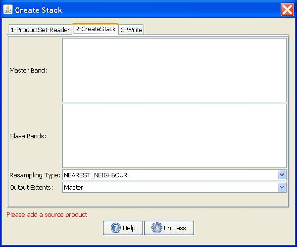

| Create Stack | |
Create Stack is a component of coregistration. The Create Stack Operator allows collocating two spatially overlapping products. Collocating two products implies that the pixel values of one product (the secondary) are resampled into the geographical raster of the other (the reference).
When two products are collocated, the band data of the secondary product is resampled into the geographical raster of the reference product. In order to establish a mapping between the samples in the reference and the secondary rasters, the geographical position of a reference sample is used to find the corresponding sample in the secondary raster. If there is no sample for a requested geographical position, the reference sample is set to the no-data value which was defined for the secondary band. The collocation algorithm requires accurate geopositioning information for both reference and secondary products. When necessary, accurate geopositioning information may be provided by ground control points. The metadata for the stack product is copied from the metadata of the reference product.
Master)NONE only Master is allowed; Minimum or
Maximum stop with "Please select only Master extents when resampling type is None".
To use them, choose a resampling method.NONE the Secondary
is not resampled but shifted by a whole-pixel offset. The Initial Offset Method sets how that offset
is found:Orbit (default): from the orbits, at the centre of the Reference scene. For
geocoded inputs (GSLC) the offset is taken from the geocoding instead.Product Geolocation: from the geocoding of each product, at a point in the
common coverage.Product Geolocation and changes a NONE
resampling to BISINC_5_POINT_INTERPOLATION; GPT and graphs do not.
When at least one source product is a Geocoded SLC (output of GSLC-Terrain-Correction), CreateStack switches to a geocoded-stacking path that avoids any complex resampling of the carrier-bearing data — resampling a GSLC would destroy the phase needed for InSAR.
If the inputs are mixed (a geocoded reference plus one or more raw slant-range SLC secondaries), the secondaries are automatically promoted to GSLCs on the reference's grid. The promotion does four things:
gslc_output_flattened metadata stamp,
so the Secondary is built with the same flattening state. Interferogram refuses a
stack that mixes flattened and non-flattened legs.gslc_source_slc_path stamp (or its source
SLC can be found by name in the reference's directory), the Reference SLC is reloaded
and the residual offset of each Secondary it geocodes is measured: for TOPS a constant
(range, azimuth) shift from Back-Geocoding and Enhanced Spectral Diversity, for stripmap
a smooth polynomial offset field fitted to cross-correlation GCPs. If the correction stays
below 0.05 pixel everywhere in the scene it is ignored; otherwise the Secondary is
geocoded again with it (rangeOffsetPixels / azimuthOffsetPixels,
or rangeOffsetPoly / azimuthOffsetPoly for a stripmap field).
This recovers sub-pixel alignment that orbit + DEM alone cannot provide.A Secondary that is already a GSLC on the Reference's grid, with the same flattening and azimuth-carrier settings, is stacked as it is: it is not geocoded again and no bias is estimated for it. The bias estimate above applies only to Secondaries that Create Stack geocodes itself.
If the bias estimation cannot run (the Reference SLC isn't reachable on disk), CreateStack falls back to pure geometric coregistration (bias = 0). The stack will still produce a recognisable interferogram, but the residual sub-pixel offset will degrade coherence.
Two parameters control this behaviour:
Auto-coregister GSLC slaves (the dialog label; these are the Secondaries) (default true) — main switch
for the GSLC path. Disable only for unit tests or when you want to coregister
manually with explicit GSLC-Terrain-Correction nodes for each secondary.For GSLC inputs the operator forces Resampling Type = NONE and the
Output Extent = Master (the reference extent). Other settings are ignored on that path.
For every target pixel, both the reference and the (offset-corrected) secondary are probed: if either side is no-data at the corresponding pixel, the target pixel is set to no-data. This guarantees that the intersection of the two scenes is the only region with valid data in the stack — downstream interferogram / coherence rasters then have clean no-data borders matching that intersection.
GPT operator: CreateStack. Generated from the operator source; parameter names are those used in GPT and graph XML.
| Parameter | Type | Default | Allowed values | Unit | Description |
|---|---|---|---|---|---|
masterBands | String[] | The list of source bands. | |||
sourceBands | String[] | The list of source bands. | |||
resamplingType | String | NONE | The method to be used when resampling the secondary grid onto the reference grid. | ||
extent | String | Master | Master, Minimum, Maximum | The output image extents. | |
initialOffsetMethod | String | Orbit | Orbit, Product Geolocation | Method for computing initial offset between reference and secondary | |
autoCoregisterGSLC | boolean | true | Auto-estimate cross-correlation bias and re-geocode GSLC slaves when the input stack contains geocoded products. | ||
skipBiasEstimation | boolean | false | Skip the cross-correlation refinement step; use pure geometric coregistration. Faster but less accurate. |